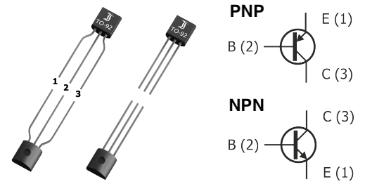

Transistores
Para entender los transistores y hacerlos funcionar, debemos saber que significan sus valores, aquí una breve descripción de los más importantes:
- Current Gain (β): En cualquier circuito, la ganancia de corriente de un transistor es un parámetro importante, se suele denominar β o hfe. La corriente es la relación entre la corriente de base y la corriente de colector y una medida de la capacidad de amplificación del transistor. Si desea utilizar el transistor como amplificador, elija un transistor con mayor ganancia de corriente.
- Collector-Emitter Voltage (VCEO): El VCEO es el voltaje máximo que la unión colector-emisor de un transistor puede soportar. En la mayoría de los transistores, el VCEO suele ser de 30V o más, medido con la base en circuito abierto.
- Emitter-Base Voltage (VEBO): El voltaje VEBO es el voltaje máximo que se puede aplicar a través de la unión emisor-base. Es el responsable para activar o desactivar el transistor controlando el paso de la corriente del Emitter. El VEBO es relativamente menor que el VCEO. El VEBO máximo suele ser de 6V o más para la mayoría de los transistores y se mide con el colector abierto.
- Collector-Base Voltage (VCBO): El VCBO es el voltaje máximo que se puede aplicar a través de la unión colector-base y se mide con el circuito abierto del emisor. El VCBO suele ser de 50V o más. El VCBO es relativamente más alto que el VCEO porque el voltaje colector-base suele ser mayor que el voltaje colector-emisor.
- Collector current (LC): La corriente del colector es la corriente máxima que puede circular por el colector. Generalmente se define en miliamperios, pero para transistores de alta potencia, se define en amperios.
Aplicar un voltaje o corriente superior al maximo definido puede dañar el transistor. Se puede usar una resistencia para limitar la corriente. Verifique siempre los datos en el datasheet.
Los fabricantes crean casi una infinidad de transistores, pero aquí listamos los más comunes para un laboratorio.
| Transistor | Tipo | β | VCEO | VEBO | VCBO | LC |
|---|---|---|---|---|---|---|
| BC547 | NPN | 800 hFE | 45V | 6V | 50V | 100mA |
| BC548 | NPN | 800 hFE | 30V | 5V | 30V | 100mA |
| BC549 | NPN | 800 hFE | 30V | 5V | 30V | 100mA |
| BC557 | PNP | 800 hFE | 45V | 5V | 50V | 100mA |
| BC558 | PNP | 800 hFE | 30V | 5V | 30V | 100mA |
| BC559 | PNP | 800 hFE | 30V | 5V | 30V | 100mA |
| 2N3904 | NPN | 200 hFE | 40V | 6V | 60V | 200mA |
| 2N3906 | PNP | 200 hFE | 40V | 5V | 40V | 200mA |
| 2N4401 | NPN | 200 hFE | 40V | 6V | 60V | 600mA |
| 2N4403 | PNP | 300 hFE | 40V | 5V | 40V | 600mA |
Pinout
Todos los transistores que están definidos en la tabla tienen el mismo pinout estándar:
